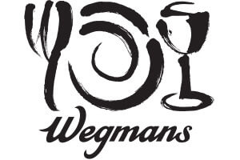

Used Python to read, manipulate, visualize, analyze, and export data across many files
Worked with the data science team to create machine learning algorithms to distinguish rat patterns
Created Virtument, an online database and interface for providing therapist referrals based on individual needs
Used Wix and Velo (Wix’s version of JavaScript); created and queried databases
Developed my knowledge of web-development tools and skills and was asked to continue in the fall and winter
Worked 8 hours per week as an intern during the 2020-21 school year; asked to remain as a consultant
Designed pages using WordPress, implemented a member account and payment system that uses PayPal

Worked 18 hours a week as a cashier and other store responsibilities while maintaining a 4.0 GPA during my senior year in high school; currently work during school breaks; scholarship recipient